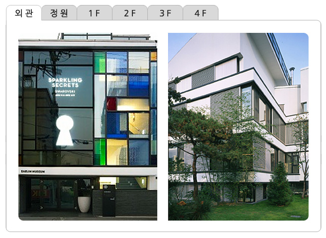
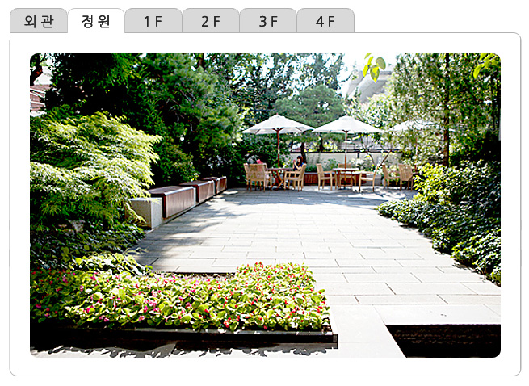
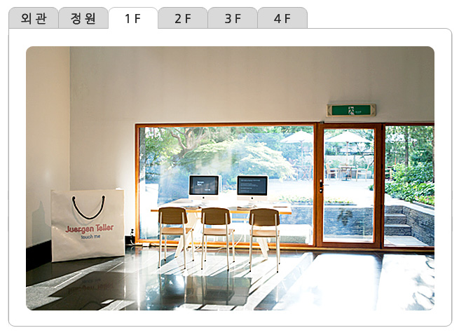
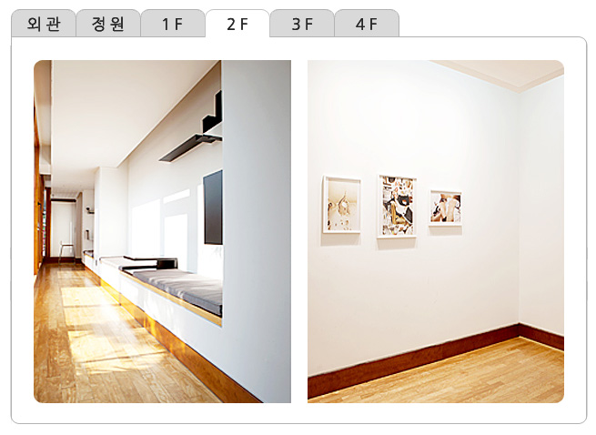
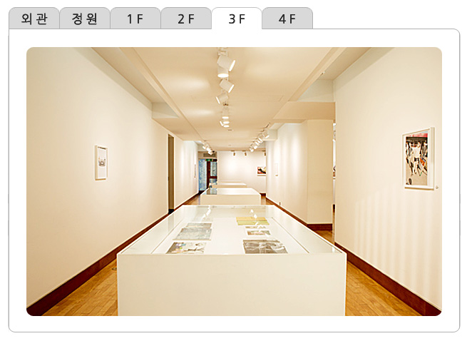
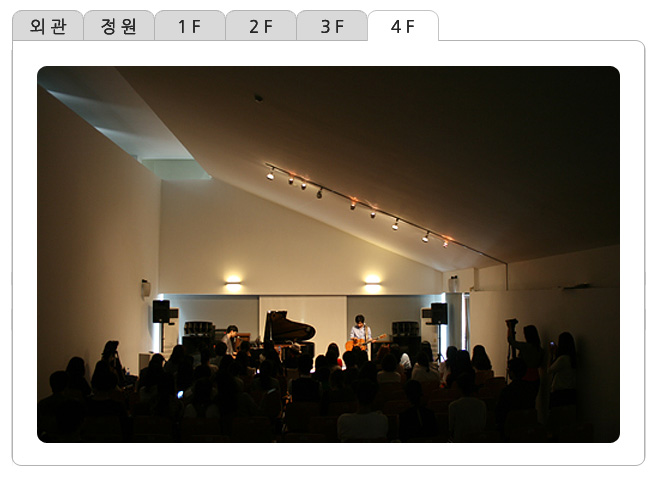

ABOUT
HOME > ABOUT > 건물소개
건물 소개
전시공간 소개
대림미술관은 유서 깊은 경복궁과 접해있는 통의동 주택가에 위치하고 있습니다.
현재 건축은 1967년이래 한 가족의 보금자리였던 것을 프랑스 건축가 뱅상 코르뉴가 개조한 것입니다.
코르뉴는 미술관 개조를 수 차례 경험한 미술관 전문 건축가로서 파리 피카소 미술관의 개조를 맡기도 했습니다.
그는 미술관의 기존 가옥과 주변 환경 등 이미 존재하는 것들을 최대한 고려하여, 미술관을 전문적이고 효율적인 공공의 장소로
개조했습니다.
- 
- 
- 
- 
- 
- 
건축의 전면, 파사드는 한국의 전통 보자기에서 영감 받은 스테인드 글라스로 눈길을 끌고 있으며,
건물 내부에 정원을 향해 둘러있는 2층과 3층의 베란다는 관람객들의 아름다운 휴식공간이 되고 있습니다.
1층은 정원과 주차장을 포함해 리셉션, 수장고, 회의실 등이 있고, 2층과 3층은 각각 넓고, 작은 방들과 긴 갤러리,
그리고 천정이 높은 방 등으로 이루어진 180평의 전시실과 사무실이 위치해 있습니다.
4층은 120명 규모의 세미나실과 아름다운 전망의 발코니가 있습니다.
세미나실 전면의 발코니는 인왕산은 물론 멀리 북한산까지 보이는 탁 트인 전망을 안고 있습니다.